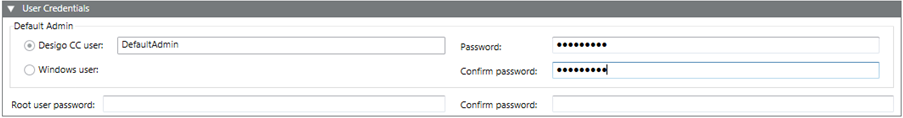

User Credentials Expander
The User Credentials expander allows you to configure the DefaultAdmin and the Root user password fields (administrative purposes).

Item | Description |
Default Admin as Desigo CC user | (Default selection) Enter the name for the Desigo CC user to change the default value DefaultAdmin. |
Default Admin as Windows user | Select the radio button Windows user to set the Default Admin as the Windows user. Browse for the Default Admin Windows user from Current station or from Other Domain. It could be the windows local user or a domain user. |
Password | Enter the DefaultAdmin’s password for the Desigo CC user. Ensure that the password meets the complexity requirements, if you have selected the Password must meet complexity requirements check box in the Security expander. (See Security expander in SMC System Settings.) |
Confirm password | Re-enter the DefaultAdmin password for the Desigo CC user to confirm it. |
Root user password | Enter the Root user password. Ensure that the password meets the complexity requirements, if you have selected the Password must meet complexity requirements check box in the Security expander. (See Security expander in SMC System Settings.) |
Confirm password | Re-enter the Root user password to confirm it. |